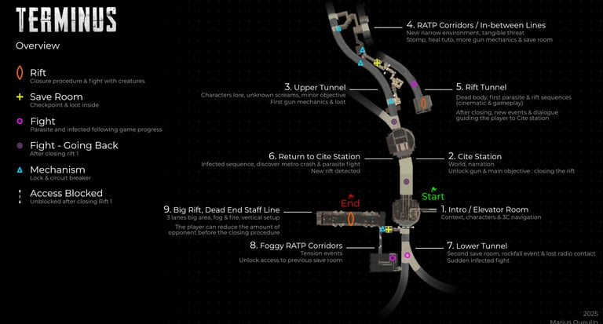
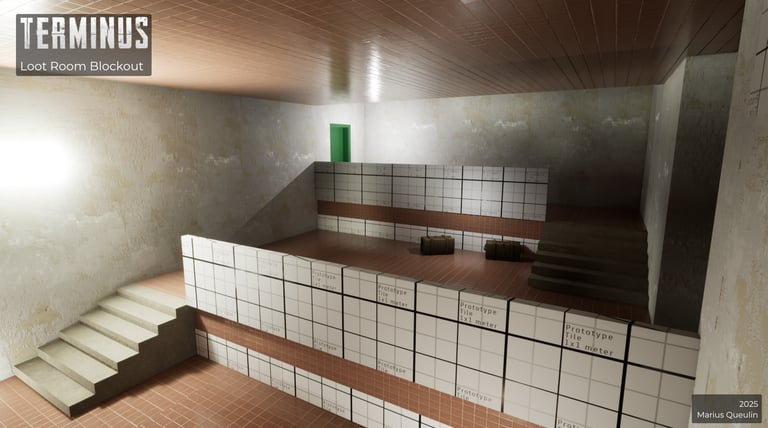
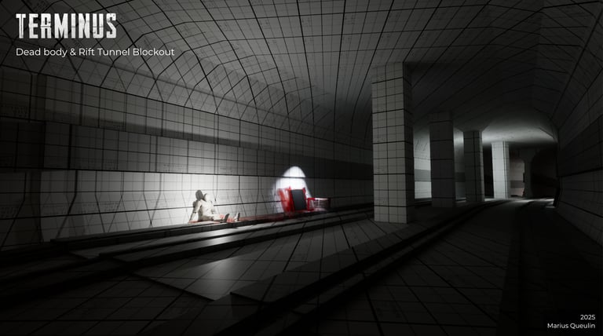
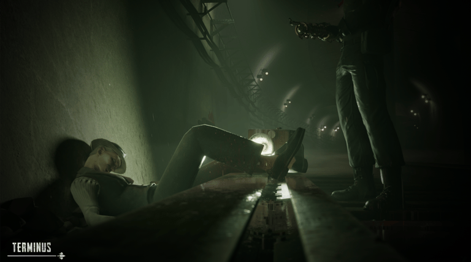
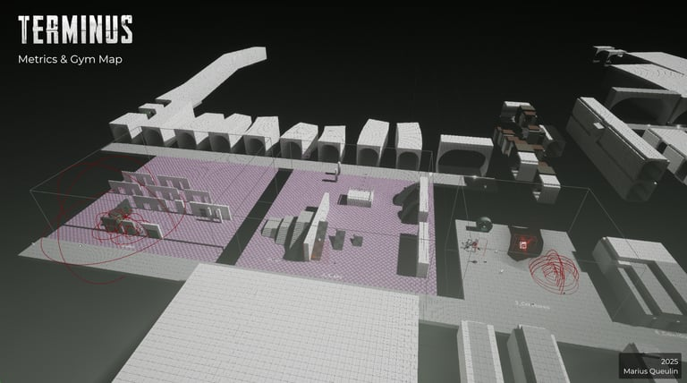
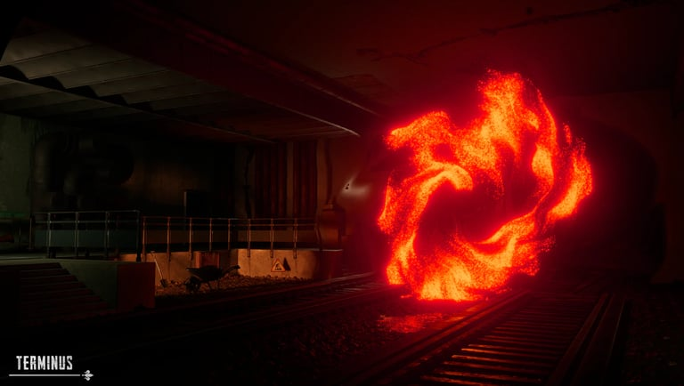
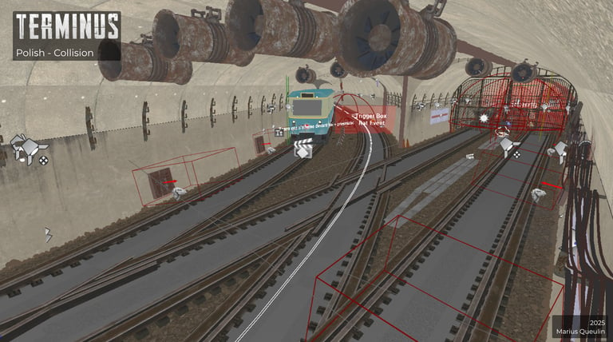
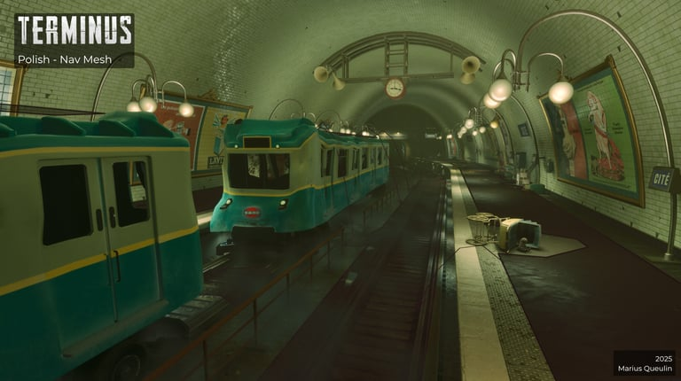
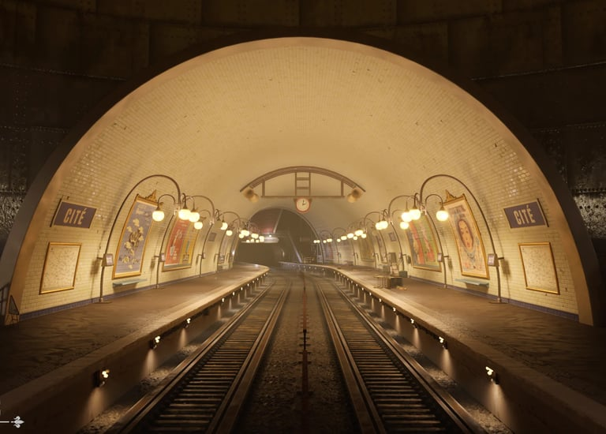

Pitch
Pitch
1968. Sous les rues de Paris, une horreur s'eveille. Plongez dans les tunnels du metro infeste.
1968. Beneath the streets of Paris, a horror awakens. Dive into the infested metro tunnels.
Informations
Details
- Outils
- Tools
- Unreal Engine, Perforce, G Suite, Photoshop, Miro
- Duree
- Duration
- Projet de fin de Master - 1 an et 4 mois (temps plein)
- Equipe
- Team
- 11 personnes (niveau pre-junior) — Game Design, Game Art & Programmation
- References
- References
- Dead Space, Resident Evil & The Order: 1886, The Evil Within
- Setting
- Setting
- Paris, metro 1968
- Intentions
- Intentions
- Faire une lettre d'amour au survival horror en créeant une aventure immersive/cinématographique dans un cadre unique, le Paris de 1968'

Durant cette étape, j'ai participé à plusieurs brainstorms et à l'élaboration du GDD ainsi que d'autres documents sur le Level Design, utiles pour l'équipe et pour moi-même. Parallèlement, j'ai effectué de nombreux tests exploratoires sur des maps Unreal Engine, axées sur le personnage, ses actions, les GPE et les combats ainsi que sur l'architecture même des lieux.
During this stage, I participated in several brainstorming sessions and contributed to the GDD and other Level Design documents. I also conducted numerous exploratory tests on Unreal Engine maps focused on the character, actions, GPEs, combat, and the architecture of the spaces.
Pendant le blockout des niveaux, le Modeling Tool d'Unreal Engine m'a bien servi pour créer des formes plus ou moins complexes. J'ai utilisé aussi beaucoup de matériaux de grille triplanar avec des échelles de gris différentes pour les Metrics et l'Architecture.
Lors de la construction, j'ai priorisé les zones importantes comme les failles et les endroits de narration avec des Landmarks et des points de vue qui se démarquent du reste. J'ai aussi beaucoup utilisé le confort et le danger pour concevoir les lieux. J'apporte un maximum d'intention de design utile pour guider le joueur (Lighting, Matériaux, etc.) en essayant de penser aussi à l'ambiance globale et aux éléments plus artistiques (Brouillard, Couleur, Decal) qui peuvent renforcer mes intentions.
During the blockout phase, Unreal Engine's Modeling Tool was very useful for creating more or less complex shapes. I also used a lot of triplanar grid materials with different greyscale values for Metrics and Architecture.
During construction, I prioritized important areas such as rifts and narrative spots with Landmarks and viewpoints that stand out. I used comfort and danger extensively in designing the spaces, bringing strong design intent to guide the player (Lighting, Materials, etc.) while also thinking about the global atmosphere and more artistic elements (Fog, Color, Decals) that reinforce my intentions.



Dans ce projet, j'ai créé un outil Blueprint qui m'a permis de faire le blockout des tunnels et des couloirs de façon modulaire. Cela m'a permis de gagner du temps et de la flexibilité sur la construction des niveaux. J'ai aussi créé des portes physiques lors des phases de test.
J'ai ensuite utilisé et ajusté beaucoup de systèmes Blueprint conçus par d'autres designers ou programmers : les Scriptable Events très polyvalents, les failles et les Spawners, etc.
In this project, I created a Blueprint tool that allowed me to blockout tunnels and corridors in a modular way, saving time and gaining flexibility in level construction. I also created physical doors during testing phases.
I then used and adjusted many Blueprint systems designed by other designers or programmers: the very versatile Scriptable Events, the rifts, the Spawners, etc.


J'accorde beaucoup d'importance aux finitions de mes niveaux, surtout lorsque l'expérience se veut réaliste comme dans TERMINUS. C'est pourquoi j'essaye toujours d'ajuster les collisions, les acteurs physiques ainsi que les Nav Mesh.
Les collisions ont été conçues pour les 3Cs, les interactions (GPE/GPE ou Objets) et les IA (créatures). Le Nav Mesh de base d'Unreal peut s'avérer chaotique - nous avons limité son utilisation en augmentant le poids des acteurs physiques et en réduisant leurs interactions entre eux.
I place great importance on the polish of my levels, especially when the experience aims for realism as in TERMINUS. That's why I always adjust collisions, physical actors, and Nav Meshes.
Collisions were designed for the 3Cs, interactions (GPE/GPE or Objects), and AI (creatures). Unreal's default Nav Mesh can be chaotic - we limited its use by increasing the weight of physical actors and reducing their interactions with each other.



Durée du jeu : ~30min
Game duration : ~30min
C'est mon projet le plus abouti à ce jour. Il a été essentiel dans mon parcours et m'a permis d'atteindre la maturité que j'ai aujourd'hui. J'ai eu la chance de travailler pendant plus d'un an sur ce projet, au sein d'une équipe où nous étions décisionnaires de chaque choix technique et créatif.
Avec le recul, j'aurais aimé faire moins de tests exploratoires et verrouiller les niveaux plus tôt afin d'améliorer leur base plus rapidement. Cela m'aurait aussi permis de me concentrer davantage sur chaque zone. J'aurais aimé intégrer plus de verticalité et réduire certains moments trop linéaires.
Côté Game Design, si nous avions eu plus de temps et d'expérience, nous aurions sûrement mieux réfléchi pour éviter certains pièges et consolider le concept favorisant l'originalité de chaque fonctionnalité.
This is my most accomplished project to date. It has been essential in my journey and allowed me to reach the maturity I have today. I had the chance to work for over a year on this project, within a team where we made every technical and creative decision.
back, I would have liked to do fewer exploratory tests and lock down the levels earlier to improve their foundation more quickly. This would have allowed me to focus more on each individual area. I also wish I had integrated more verticality and reduced some overly linear moments.
On the Game Design side, with more time and experience, we would have thought more carefully to avoid certain pitfalls and strengthen the concept to better highlight the originality of each feature.